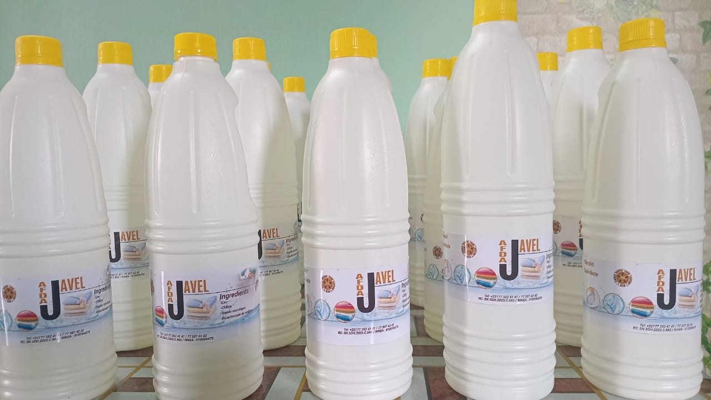
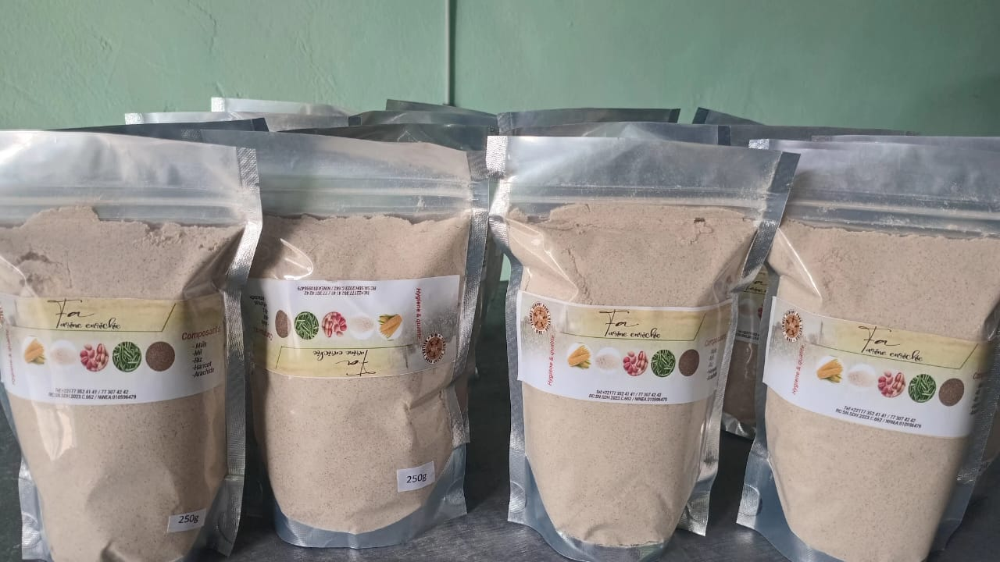
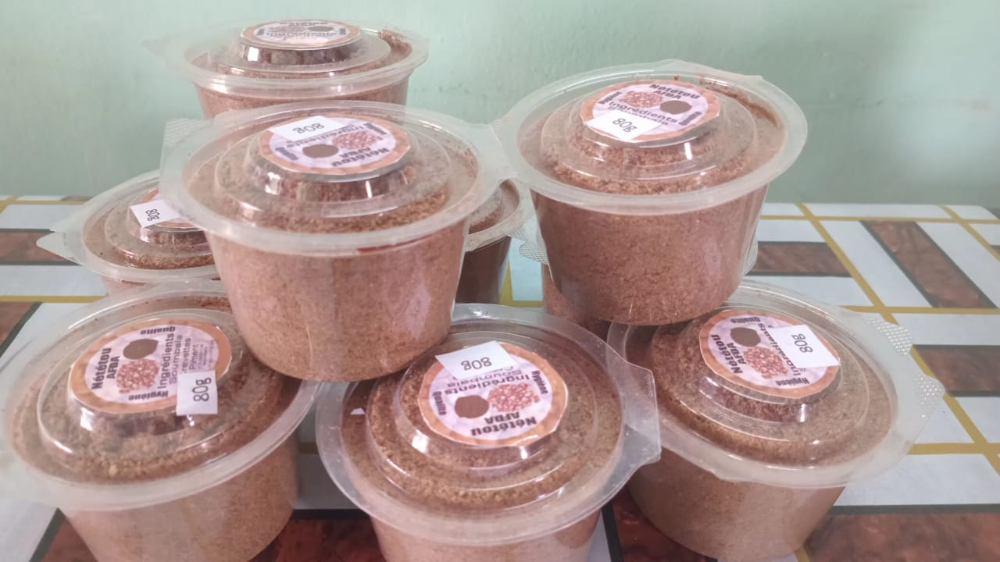
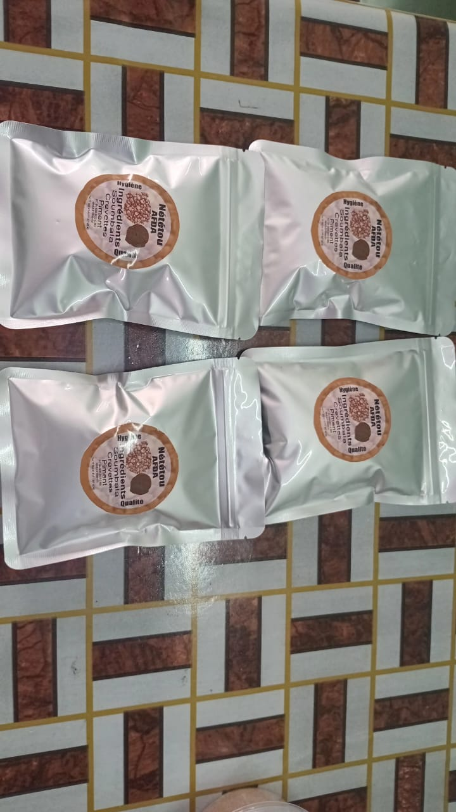

GIE AFDA — l'autonomie par le travail
Un Groupement d'Intérêt Économique porté par les femmes de l'AFDA, qui transforme et commercialise des produits de qualité pour les foyers de Goudomp.

Transformer le travail des femmes en revenus durables
Le GIE AFDA met en œuvre la mission de l'association en matière d'autonomisation économique : il regroupe des femmes formées à la production artisanale de condiments et de produits d'hygiène, vendus localement pour financer leurs familles et les actions de l'association.
Chaque produit est fabriqué avec des ingrédients simples, un souci constant d'hygiène et de qualité, et un étiquetage soigné portant la marque AFDA.
Fabriqués par les femmes du GIE AFDA
Quatre gammes de produits, du condiment traditionnel aux produits d'entretien de la maison.
Nététou AFDA
Condiment traditionnel à base de soumbala, crevettes et piment. Disponible en pots et en sachets de différents formats.
Ingrédients : soumbala, crevettes, piment
AFDA Javel
Eau de javel désinfectante pour l'entretien du linge et de la maison, fabriquée localement.
Ingrédients : eau, chlore, soude caustique, bicarbonate de sodium
Fa — Farine enrichie
Farine enrichie pour une alimentation équilibrée des familles, conditionnée en sachets de 250 g.
Composée de : maïs, mil, riz, haricot, arachide
Moussant AFDA
Liquide moussant pour la vaisselle, le carrelage et le lavage, qui nettoie en profondeur.
Usages : vaisselle, carreaux, lavageUn travail soigné, du sachet au pot


Commander les produits du GIE
Pour passer commande ou devenir revendeur des produits AFDA, contactez directement le GIE.
Passer commande
Téléphone
Registre
RC : SN.SDH.2023.C.662
NINEA : 010596479
Localisation
Goudomp, région de Sédhiou, Sénégal